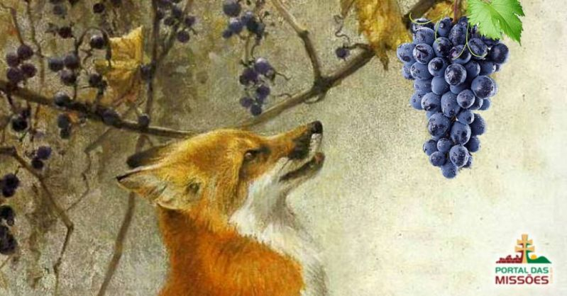

Morta de fome, uma raposa foi até um vinhedo sabendo que ia encontrar muita uva. A safra tinha sido excelente.
Ao ver a parreira carregada de cachos enormes, a raposa lambeu os beiços. Só que sua alegria durou pouco: por mais que tentasse, não conseguia alcançar as uvas.
Por fim, cansada de tantos esforços inúteis, resolveu ir embora, dizendo:
- Por mim, quem quiser essas uvas pode levar. Estão verdes, estão azedas, não me servem. Se alguem me desse essas uvas eu não comeria...
Moral da história: Desprezar o que não se consegue conquistar é fácil.
